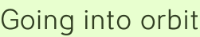

Going into orbit
Did you find a cool Processing sketch on the internet today and post it to reddit? Why not!? Well on Monday someone linked up this awesome Orbitals simulation from 2004.
Oops! Sorry for crashing everybody’s Ubuntu again. (It works fine on this one.) But you know, there is this wonderful virtual machine available in most web browsers (not the one named after a vegetable drink / large combustion engine) and we are going to use it, by gum.
The sketch, created by Jared Tarbell, simulates orbital bodies using a bunch of trigonometric functions you learned in high school (or not… they didn’t seem to do anything like this). But math is hard, let’s go looping:
for (int x=0;x<b.width;x++){
for (int y=0;y<b.height;y++) {
color c = get(x,y);
boolean exists = false;
for (int n=0;n<numpal;n++) {
if (c==goodcolor[n]) {
exists = true;
break;
}
}
if (!exists) {
// add color to pal
if (numpal<maxpal) {
goodcolor[numpal] = c;
numpal++;
} else {
break;
}
}
if (random(10000)<100) {
if (numpal<maxpal) {
// pump black or white into palette
if (random(100)<50) {
goodcolor[numpal] = #FFFFFF;
print("w");
} else {
goodcolor[numpal] = #000000;
print("b");
}
numpal++;
}
}
}
}These loops take unique colors from an image b (which has been painted, so get() works on it) and put them in a goodcolor array. But! Every one out of a hundred iterations or so, it gets funky and adds an extra element that is either black or white. Each iteration adds either zero, one, or two array elements—lock up your daughters!
This is something funny that happens with this kind of open-ended programming. The way the sketch behaves is driven not just by imagination by also the language and environment, adding an actual computer dimension to computer art; registers and jump instructions themselves become a part of the work the work.
To do exactly the same thing this loop is doing in a functional language would be awkward and dissatisfying. So we improvise. Because, hey, if this were written in a functional language in the first place, it would be doing something different. The goodcolor sequence is read randomly, later, so inserting the expected proportion of black and white elements as a block should have the same effect as scattering a similar amount by chance.
def takecolor(img: PImage, len: Int) = (
List.make(len / 200, 0xFFFFFFFF) ++
List.make(len / 200, 0xFF000000) ++
img.pixels.toList.removeDuplicates
).take(len)This is not exactly the right proportion, on second thought; for that we would need to know the proportion of unique colors to pixels in the source image. But it’s close enough. If you don’t like the amount of black and white in the image, adjust the denominator (or randomize it a little).
In addition to that cheap trick, this function is profiting from P5 library calls that may not have been available to the original, and it’s being kind of sloppy and reading in the entire image, then truncating, instead of stopping when the target number of colors is hit. Stream could do a better job, if anyone wants to figure that out, but as it is there is no noticeable delay in startup from loading in the colors, and the code is tight, so whatever.
Here’s the procedure that returns a random array element:
color somecolor() {
// pick some random good color
return goodcolor[int(random(numpal))];
}This Java code is simple enough, but wouldn’t it be cool to be able to select a random element from any sequence, since it seems like that happens a lot in Processing? It is simple do with implicit conversions. Let’s add it to the API:
trait Randoms {
private val rand = new Random
implicit def seq2RichRandom[K](seq: Seq[K]) = new RichRandom(seq)
protected class RichRandom[K](seq: Seq[K]) {
def random: K = seq((rand.nextFloat * seq.length).toInt)
}
...Spde brings this into scope by default, so any sketch can call random on a sequence directly. At that point you don’t really need a somecolor() function, just call goodcolor.random. And it comes in handy here, when selecting a random, existing list element to orbit around while building the list:
def make_orbitals(num:Int, around: List[Body]): List[Body] =
if (around.length == num) around
else make_orbitals(num, new Orbital(around.random) :: around)Next!
...
class Bet[K](val weight: Int, val out: () => K)
class BetSum[K](val bet: Bet[K], val sum: Int)
def play[K](odds: Bet[K]*) = {
def adder(acc:Int, in: Seq[Bet[K]], out: List[BetSum[K]]): List[BetSum[K]] = in match {
case Nil => out
case Seq(cur, rest @ _*) => adder(acc + cur.weight, rest, new BetSum(cur, acc) :: out)
}
val sl = adder(0, odds, Nil)
val score = rand.nextDouble * (sl.head.sum + sl.head.bet.weight)
sl.find(_.sum < score).get.bet.out()
}
implicit def int2RichBetter(weight: Int) = new RichBetter(weight)
protected class RichBetter(weight: Int) {
def %>[K](out: => K) = new Bet(weight, () => out)
}
}This is the rest of the Randoms trait. It is a scary tool for making a program act unpredictably. The idea is that you pass control off to play along with weighted outcomes, each defined as a Bet. This allows an expression to be written in terms of whole-number odds like 100 to 1, 1 to 1 (50/50), or 1 to 2 to 10. The adder function tail-recursively builds sum elements for the bet sequence, then we fetch a random, ranged score and return whichever bet won. The losing outcomes, passed in “by name”, are never evaluated.
Well, n8, you could probably have done adder with a fold, but when you wrote this you didn’t realize that folds are not obligated to reduce lists; a fold can build a new list, even one of a different length than the source list. See: future post.
The low point of writing this was giving up on doing adder with terse, immutable list processing functions. Are we missing something? The recursive solution is fine, but still. The high point was, as usual with Scala, exploiting the freedom to define just about whatever API you can dream up. This one is inspired by the implicit -> tuple builder for hashmaps, but uses an evocative percent sign:
play(
1 %> "You won the lottery!",
1000000 %> "You are still poor!",
10000 %> { global_thermonuclear_war(); "Frig." }
)Although this interface was inspired by Orbitals, it doesn’t get too much of a workout there.
tv = random(0.0001,0.02/(d+1)) * play(1 %> 1, 1 %> -1)But it’s got potential!
The translated Orbitals example is available in the Spde head and latest snapshot releases.
Codercomments
Nathan, I must say. You’ve written the only software that has made Java worth loading in my browser.
Ah ha, everything is going according to my secret plan to redeem browser applets! It’s all about rebranding, and by rebranding I mean banishing Java’s terrible branding to the phantom zone and replacing it with software that does cool stuff. Which I must say is based entirely on the hard work of many people over many years. I am just putting Scala frosting on the Processing cake.
Hi Nathan
It works now fine on my ubuntu, apparently the last Java update solved the issue :)
For the record, I’m running that : java version “1.6.007” Java(TM) SE Runtime Environment (build 1.6.007-b06) Java HotSpot(TM) Server VM (build 10.0-b23, mixed mode) Linux version : 2.6.24-21-generic
++ Joseph
Add a comment